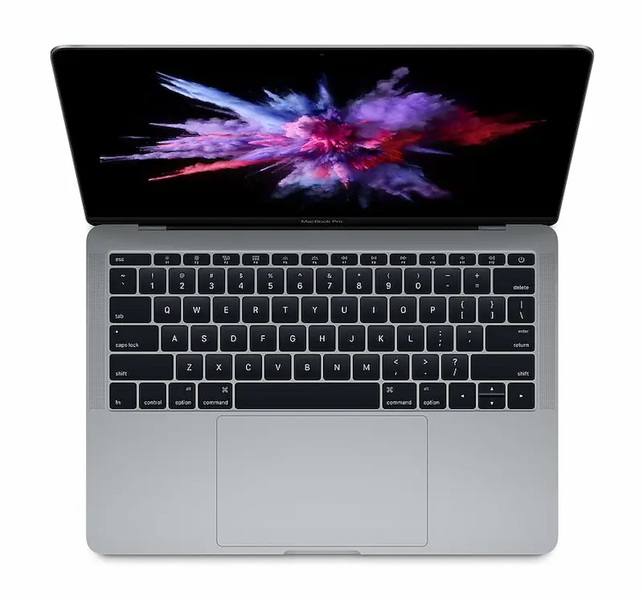

Min Computer

Type
Min copmuter er in Macbook pro fra 2017 som er 13 inches og space gray. Jeg har haft den for 5 år nu og jeg bruger den til alt.
Specs
- Processor
- 2.3 GHz Dual-Core Intel Core i5
- Memory
- 8 GB 2133 MHz LPDDR3
- MacOS
- Ventura Version 13.78
- Graphic
- Intel Iris Plus Graphics 640 1536 MB